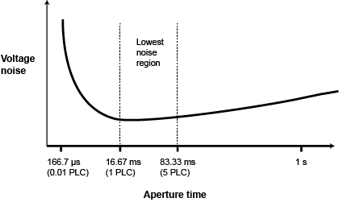

You can adjust the amount of time that the input signal is measured. Adjustments to the amount of time affect the usable measurement resolution, the amount of reading noise, and the reading rate of the instrument.
This topic discusses aperture for the measure functions. For information regarding aperture for the digitize functions, refer to Digitize functions.
Depending on the function, you can set the time as an aperture or number of power line cycles (NPLCs).
When you set the time as an aperture, you set it as a number of seconds.
When you set the time in relation to NPLCs, you set it as the number of power line cycles that should occur during the measurement. Each power line cycle for 60 Hz is 16.67 ms (1/60); for 50 Hz or 400 Hz, it is 20 ms (1/50).
The shortest amount of time or lowest NPLC value results in the fastest reading rate but increases the reading noise and decreases the number of usable digits.
The longest amount of time or highest NPLC value provides the lowest reading noise and more usable digits, but has the slowest reading rate.
The DAQ6510 has a nonlinear shape for its speed versus noise characteristics. The DAQ6510 is optimized for the 1 PLC to 5 PLC reading rate. At these rates (lowest noise region in graph), the DAQ6510 will make corrections for its own internal drift and will still be fast enough to settle a step response of less than 100 ms.

When using NPLCs to adjust the rate, frequency and period cannot be set. However, when using aperture to adjust the rate, aperture can be set for both frequency and period.
The DAQ6510 uses internal references to calculate an accurate and stable reading. When the NPLC setting is changed, each reference is automatically updated to the new NPLC setting before a reading is generated. Therefore, frequent NPLC setting changes can result in slower measurement speed.
This setting also affects the normal mode rejection ratio (NMRR) and common mode rejection ratio (CMRR). Normal mode noise is the noise signal between the HI and LO terminals; common-mode noise is the noise signal between LO and chassis ground. See the DAQ6510 specification for NMRR and CMRR values at different PLC settings.
If you change the aperture or NPLCs, you may want to adjust the displayed digits to reflect the change in usable digits. Refer to Setting the number of displayed digits.
For functions that can accept either an aperture or an NPLC value, changing the value of one changes the value for the other. For example, if you set an aperture of 0.035, then set an NPLC value of 2, the aperture value is changed to 0.033333333.
To set NPLC using the front panel: